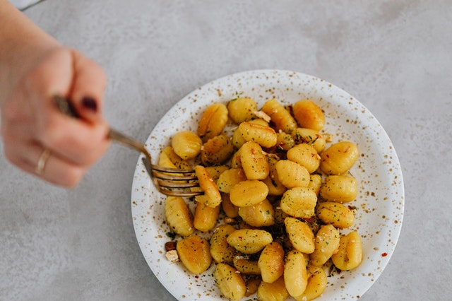

Gnocchis

Recette de gnocchis à agrémenter de votre sauce préférée
À la fois moelleux et croustillants, ces gnocchis sauront assurément se faire une place dans votre alimentation
Ingrédients
- Patates (250g)
- Farine (1 tasse)
- Oeuf (1)
- Sel
- Huile de canola
- Romarin (facultatif)
Préparation
- Couper les patates en quatre et les faire bouillir.
- Piler les patates, puis les mélanger avec la farine et l'oeuf jusqu'à l'obtention d'un mélange homogène.
- Placer la pâte sur une surface enfarinée et la séparer en 5 ou 6 boules.
- Rouler les boules de pâte pour en faire des boudins d'un à deux cm de diamètre.
- Faire bouillir de l'eau en y ajoutant du sel.
- Couper les boudins aux deux cm.
- Avec une fourchette, former les gnocchis (facultatif).
- Plonger les gnocchis dans l'eau bouillante salée pendant 2 à 3 min.
- Retirer les gnocchis de l'eau et faire chauffer l'huile dans une poêle avec le romarin.
- Faire rôtir les gnocchis dans l'huile en les tournant à mi-cuisson et ce, jusqu'à ce qu'ils soient bien dorés.
- Ajouter votre sauce et déguster.
Bon appétit!